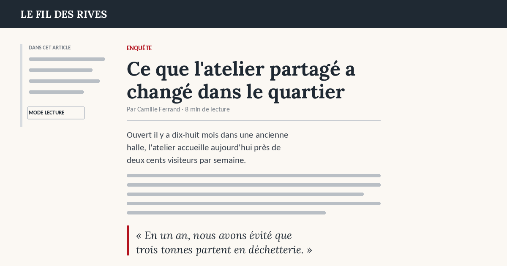
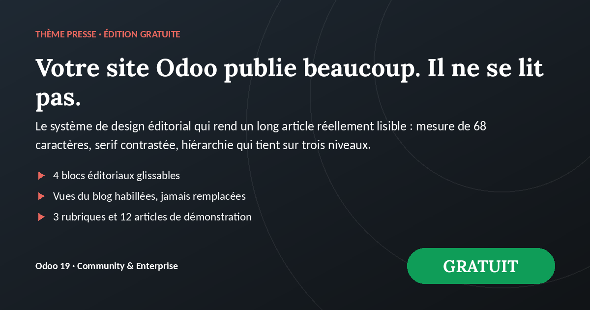
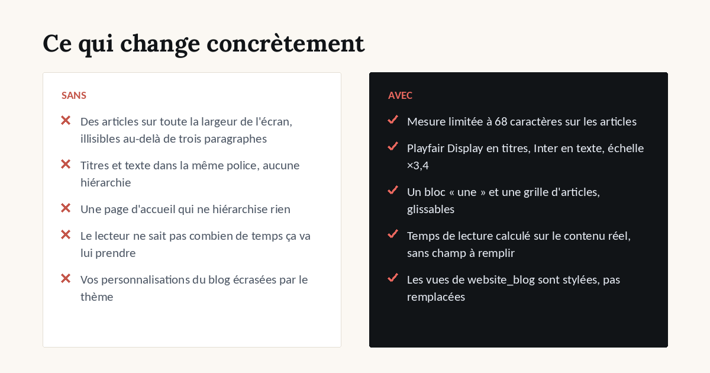
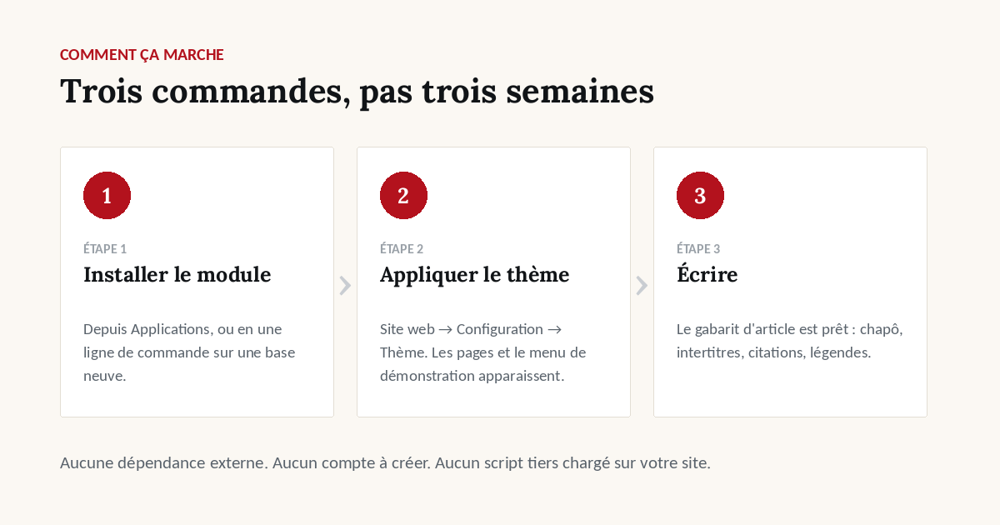

Voir avant d'installer
La page d'accueil

Le gabarit d'article

Le système de design



palette, typographie, échelle, filets, 2 palettes livrées
chapô, intertitres, citations, légendes, temps de lecture
1 article principal + 3 secondaires
3 colonnes, cartes à filet supérieur
liste de rebond en fin d'article
liste, article, couverture, page rubrique
/magazine, créée à l'application du thème
3 rubriques, 12 articles au texte plausible

Aucune dépendance externe. Aucun compte à créer. Aucun script tiers chargé sur votre site.
La page d'accueil
Le gabarit d'article

Le système de design
Autant le savoir avant l'achat qu'après.
Odoo 19.0, Community et Enterprise.
Support et questions avant achat :
welcome@dyonysos.fr
https://dyonysos.fr